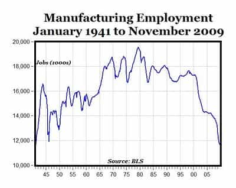

Daryush "Roosh" Valizadeh created ROK in October 2012. You can visit his blog at RooshV.com or follow him on Twitter and Facebook.


The Atlantitroll has recently published an article heralding the great return of manufacturing jobs to America. Economic prosperity is coming back!
Yet this year, something curious and hopeful has begun to happen, something that cannot be explained merely by the ebbing of the Great Recession, and with it the cyclical return of recently laid-off workers. On February 10, Appliance Park opened an all-new assembly line in Building 2—largely dormant for 14 years—to make cutting-edge, low-energy water heaters. It was the first new assembly line at Appliance Park in 55 years—and the water heaters it began making had previously been made for GE in a Chinese contract factory.
On March 20, just 39 days later, Appliance Park opened a second new assembly line, this one in Building 5, to make new high-tech French-door refrigerators. The top-end model can sense the size of the container you place beneath its purified-water spigot, and shuts the spigot off automatically when the container is full. These refrigerators are the latest versions of a style that for years has been made in Mexico.
Another assembly line is under construction in Building 3, to make a new stainless-steel dishwasher starting in early 2013. Building 1 is getting an assembly line to make the trendy front-loading washers and matching dryers Americans are enamored of; GE has never before made those in the United States. And Appliance Park already has new plastics-manufacturing facilities to make parts for these appliances, including simple items like the plastic-coated wire racks that go in the dishwashers.
This is a great example of big media’s habit of taking one sample point and trying to extrapolate it for an entire country (the NY Times is especially guilty of doing this). Unfortunately for The Atlantitroll and America, the facts doesn’t justify a substantial return of manufacturing jobs. Since 2001, 2.1 million manufacturing jobs have been lost. If you start from manufacturing’s peak, 7 million manufacturing jobs have been lost, a fact made even more severe by the fact that the American population has grown by 70 million during the same time period.

And the number of jobs that will be gained through the “insourcing boom”? 1,700. That’s how many jobs are created in the Atlantitroll’s anecdote with GE, which pay much less than than the manufacturing jobs that were lost in the decline.
It’s no small deal for those workers who now have a job thanks to insourcing, but until we create jobs in the millions, the boom is not even a hiccup for the economy. The reality is that globalization is here to stay, and if the Chinas of the world become unaffordable to manufacture, other countries will become cheaper. Only in specific industries with complex manufacturing will it be cheaper to produce in the United States.
If the living standards of the third-world is determined to rise, those of the first world must lower. Even a person dying of cancer will have his good days, but he cannot escape the inevitable.
Read Next: The Rise & Fall Of The Great Powers
{kind=link}